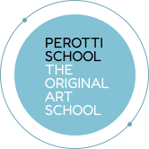
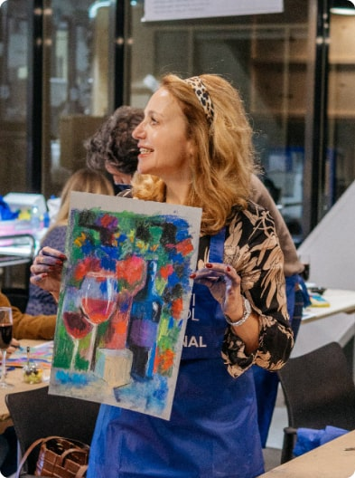

Светлана Перотти
Светлана - стипендиат Академии Художеств, соавтор метода интуитивной живописи Перотти, наставник более 1000 художников всех возрастов, автор статей по философии и психологии обучения творчеству с азов, соавтор международного проекта уникальных творческих программ по всему миру Perotti Art Tour.
Окончила художественное училище памяти 1905 года (театральную мастерскую), а затем – факультет живописи МГАХИ им. Сурикова.
Уже с первых шагов обучения живописи профессорами был отмечен необычный колористический талант Светланы Перотти. Преподавателями Светланы в МГАХИ были такие знаменитые живописцы, как Р. Лебедева, Н. Меркушев, а также легендарный художник русского театра М. М. Курилко-Рюмин, которые оказали серьезное влияние на формирование уникального творческого стиля Перотти. После окончания института Светлана Перотти не только занималась живописью, но и работала как художник-постановщик в московских и зарубежных театрах. С большим успехом было проведено несколько персональных выставок в Москве, далее последовали выставки в Голландии, США, Германии и Италии.
Поворотным моментом, сформировавшим ее подход к творчеству как к паломничеству к себе, стало путешествие в Гималаи. Возвращаясь в Индию снова и снова, Светлана открыла для себя новые законы восприятия и построения картины, а также заинтересовалась восточным видением обучения искусству. В 2001 году в Гималаях недалеко от усадьбы русского художника Н. Рериха состоялась встреча Светланы и ее мужа Федерико Перотти, которая открыла новую страничку в их биографии.
Галерея работ